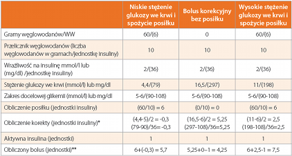

Obliczenie dawki insuliny jest skomplikowane. Szczególnie jeśli próbuje się te działania wykonać w pamięci, łatwo się pomylić. Jeśli te działania wykonuje pompa, jest zdecydowanie łatwiej. Poniżej podanych jest kilka przykładów, w jaki sposób pompa oblicza dawkę bolusa.

* Jeśli aktualne stężenie glukozy we krwi jest poniżej zakresu docelowej glikemii, obliczenie korekty będzie uwzględniać
dolną wartość zakresu docelowej glikemii. Jeśli stężenie glukozy we krwi jest powyżej zakresu docelowego, obliczenie korekty będzie uwzględniać górną wartość zakresu docelowej glikemii.
** Jeśli aktualna wartość glukozy we krwi jest poniżej zakresu docelowej glikemii, Kalkulator Bolusa nie uwzględni w
obliczeniu aktywnej insuliny.